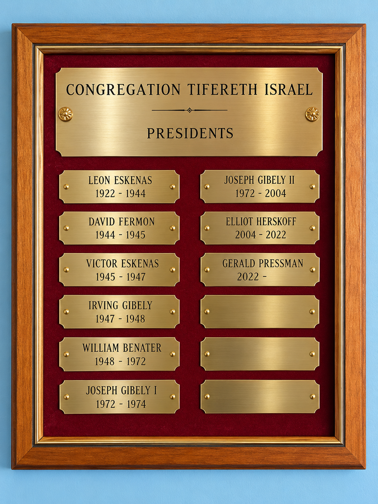
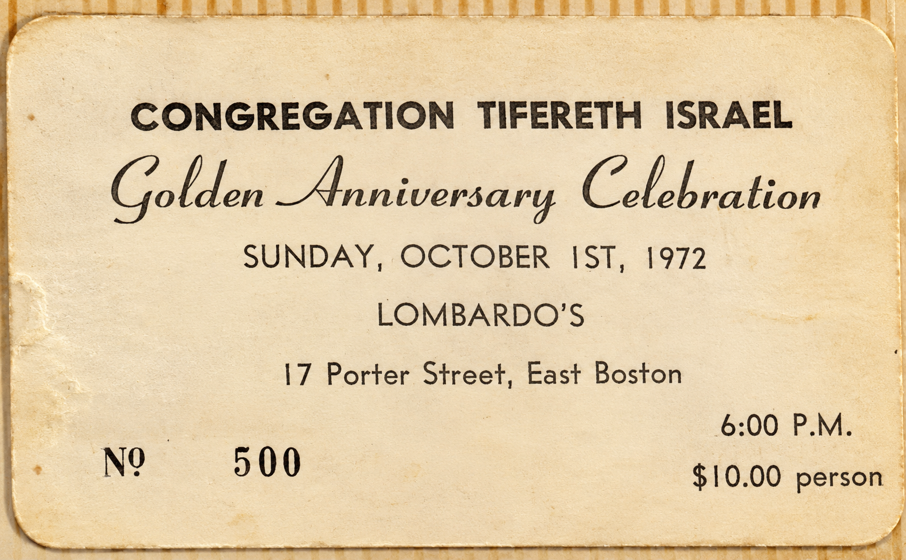
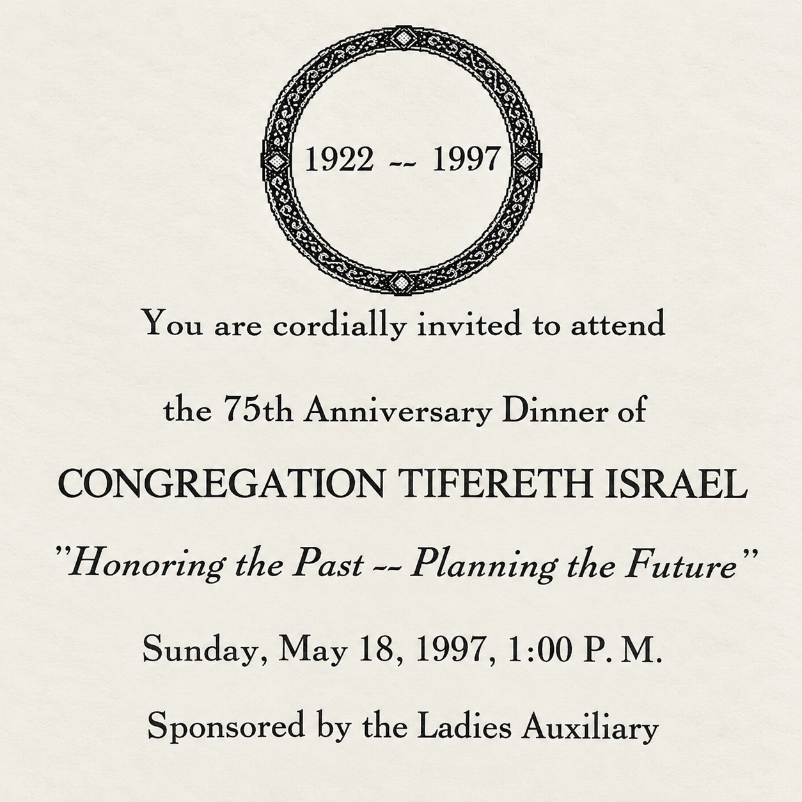
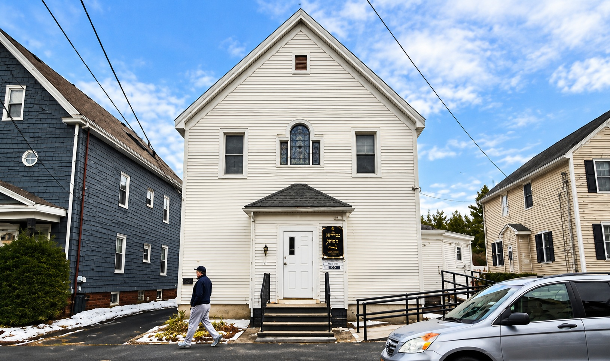

AI Retouched
February 15, 1922

AI Retouched
1922–present

AI Retouched
Salem News · October 3, 1972
AI Retouched
The Peabody Times · October 4, 1976

AI Retouched
March 1, 1979 · Archival document

AI Retouched
The Salem Evening News · May 26, 1981

The Salem Evening News · October 31, 1992

May 18, 1997 · CTI Archive

Congregation Tifereth Israel has been a gathering place for Sephardic Jews since 1922. Photo: Jakob Menendez · AI Retouched
2022 · Weekly News

2018 · Jewish Journal

Elliot Hershoff, Doris Hershoff, and Joanne Pressman at the Tifereth Israel ark.
2019 · Jewish Journal

2022
Centennial coverage preserved as the original newspaper artifact.